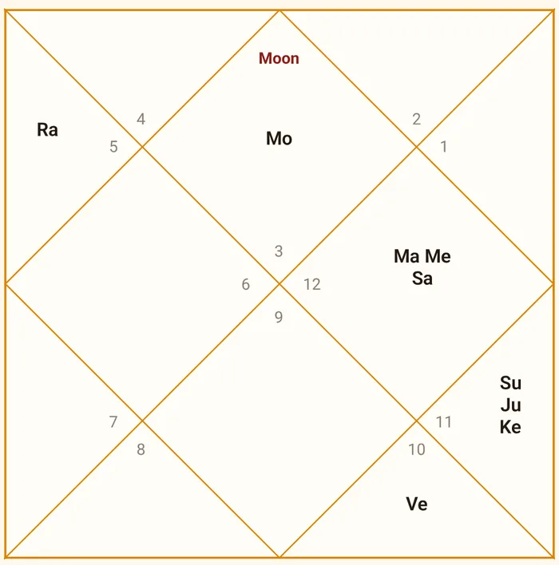

Vedic astrology · English + हिंदी
Your Kundli. Real Answers. Right When You Need.
Ask a question. AstroOracle reads your Kundli and the timing around it to give you a more personal answer.
Be among the first to experience AstroOracle.


Current dasha
Jupiter Mahadasha
Feb 2018 – Feb 2034
Timing insight
Jupiter enters Leo
31 Oct 2026 · your 3rd house